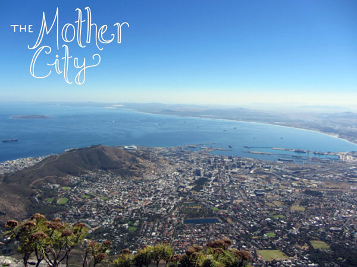
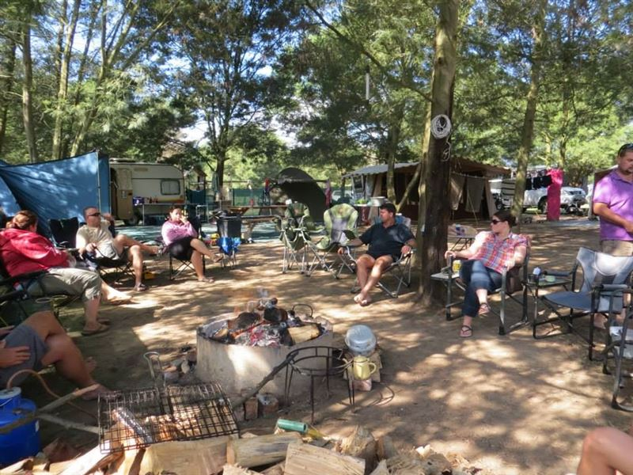
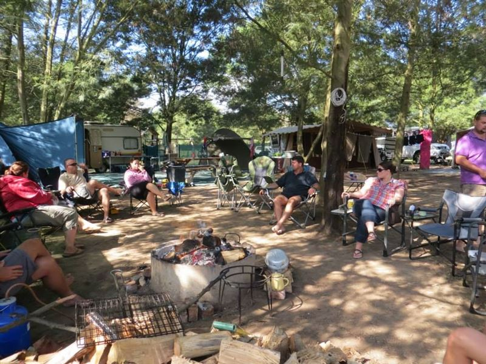

Outdoor Adventure
Nowhere in Africa can seriously compete with Cape Town when it comes to outrageous adventure
activities combined with a unique urban and outdoor playground like nowhere on earth.
Hiking
Whether you’re after a windswept coastal wander, a mountainous hike with spectacular views, or a leisurely amble through one of the Cape’s lush nature reserves, here’s our pick of the best hiking trails in and around the city. So, lace up your hiking boots and get cracking.
Important note:Although the Cape is rich in natural beauty, tourists and locals are urged to take necessary precautions when exploring secluded areas, as crimes and accidents do happen.

Rock Climbing
The Cape is full of mountains and provides a mecca of climbing. Cape Town being
the main center is a good base to start from. There are a few clubs mainly the MCSA
Cape Town Section which has over 1200 members and a bouldering wall in their club room.
The University also has a good bouldering wall and there is a climbing gym in Cape Town too.
Good climbing is only a few minutes drive from Cape Town and the furthermost areas about 4-5 hours away.

Fishing
Many fishermen’s journeys are more than likely to end up in Cape Town. There are excellent
fishing spots in a number of places depending on whether you are looking for Big Game
Fishing or something more along the lines of a quiet fly-fishing trip. Cape Town also offers
both saltwater and freshwater fishing options, raging sea fishing or quiet rivers, streams and trout fishing in dams.
Camping
Whether you’re looking for back-to-basics beauty, a fun family getaway, or a romantic retreat, we’ve got you covered with our picks of campsites in the Cape. As always, if we’ve left any of your favourites out, please let us know in the comments.
 
